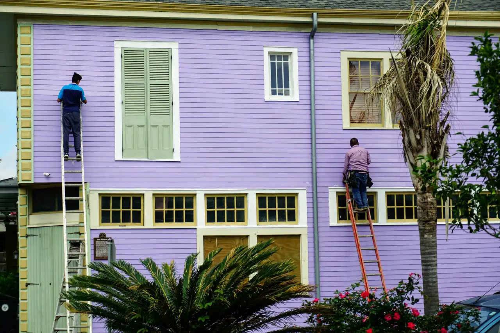
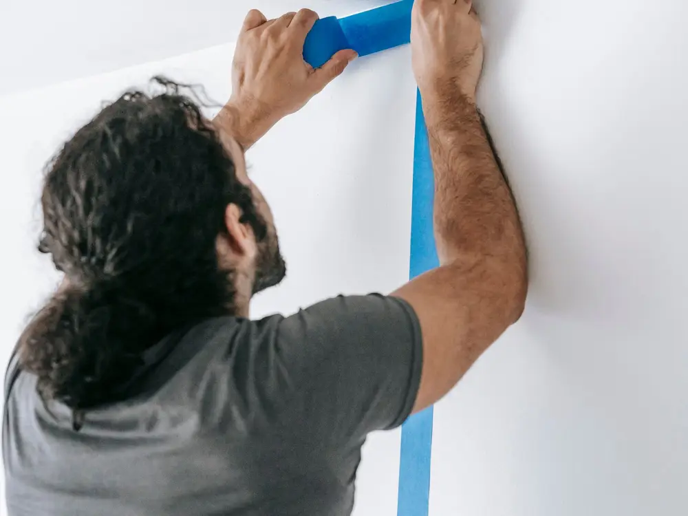

House painting in Chesapeake, VA
Interior and exterior painting for your home. If the outside needs paint and you'd rather not climb a ladder, we'll take care of it.
Request a quote
Or call us at (757) 403-4451
Family owned since 1994Prep comes first
BBB accreditedA+ rating, accredited since 2015
Based in ChesapeakeInterior and exterior painting
Licensed and insuredAdd your Virginia license #
What we paint
Inside and outside your home. Cards marked as placeholders are services we still need James to confirm.
Also ask about: Cabinet painting, deck and fence staining, drywall patching, pressure washing Placeholder

About us
A house painter in Chesapeake
James Skipper Painting is a family-owned business on Willow Ave in Chesapeake, Virginia. We've been painting since 1994, inside and out.
Most of a good paint job happens before the paint goes on, so that's where we put the work: scraping, patching, priming and getting the surface right.
A few things we've shared on our page:
- Peeling siding paint often starts with the wrong primer
- Pick exterior colors that work with your roof
- Light changes how a color looks, so test it in the room
- Buy a little extra paint for touch-ups
How it works
Tell us about the job
Send the form or call. Rooms, siding, trim, whatever needs paint.
We take a look
We come out, look at the surfaces and talk through colors and finishes.
We paint
Prep, prime where it's needed, then paint. You get a price before we start.
What customers say
“A customer's review goes here, word for word. Facebook doesn't show any reviews yet, so this space is waiting for the first one.”
Customer name, neighborhood

Check the color under your own lights
Cool, fluorescent light pulls out the greens and blues in a color. Warm bulbs bring out the reds. Look at a sample in the room before you commit.
Questions we hear a lot
Most of these answers come from tips we've posted on our Facebook page.
How long have you been in business?
Since 1994. We're a family-owned painting business based in Chesapeake, and we've been BBB accredited since 2015.
Which finish should I use on my walls?
Eggshell is a common pick for interior walls. It's close to flat, with a little more sheen, and it washes better, so fingerprints and marks come off more easily.
Oil-based or water-based paint for the outside?
Oil-based paint has the longest record outdoors. It stands up to weather and leaves a smooth finish, but it's harder to work with and dries more slowly than water-based acrylic.
Why is the paint on my siding peeling?
One common reason is the wrong primer. If the primer doesn't suit the surface, the paint can't grip, and it cracks and peels.
Can a window AC unit damage paint?
Yes. Window units are a big cause of rotted sills and peeling paint around the frame and on the siding below. If you run them, expect to repaint more often.
Do I need primer?
Often, yes. Primer sticks to surfaces where paint alone can fail, and it seals porous spots so the paint goes on and dries evenly.
How much paint should I buy?
A little more than the job needs. If you run short, the extra is already there, and whatever is left over is handy for touch-ups later.
Which areas do you cover? Placeholder
We're based in Chesapeake. List the nearby cities here, for example Virginia Beach, Norfolk, Portsmouth and Suffolk.
Are estimates free? Placeholder
Say here whether estimates are free and how soon you can come out.
Tell us what needs painting
Send the form or give us a call. We'll get back to you.
- Emailjames.skipper67@gmail.com
- Based at1122 Willow Ave, Chesapeake, VA 23325
- AreasChesapeake and nearby Hampton Roads cities Placeholder
Business hours
| Monday | 8am to 5pm |
| Tuesday | 8am to 5pm |
| Wednesday | 8am to 5pm |
| Thursday | 8am to 5pm |
| Friday | 8am to 5pm |
| Saturday | Closed |
| Sunday | Closed |
Facebook doesn't list hours yet. These are sample hours for James to change. You can send the quote form any time.